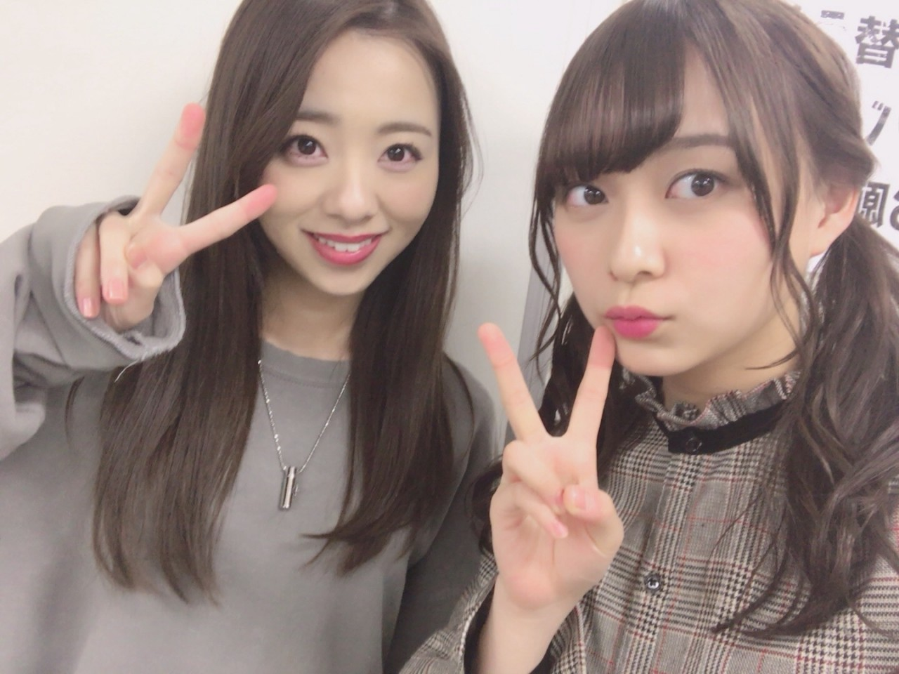
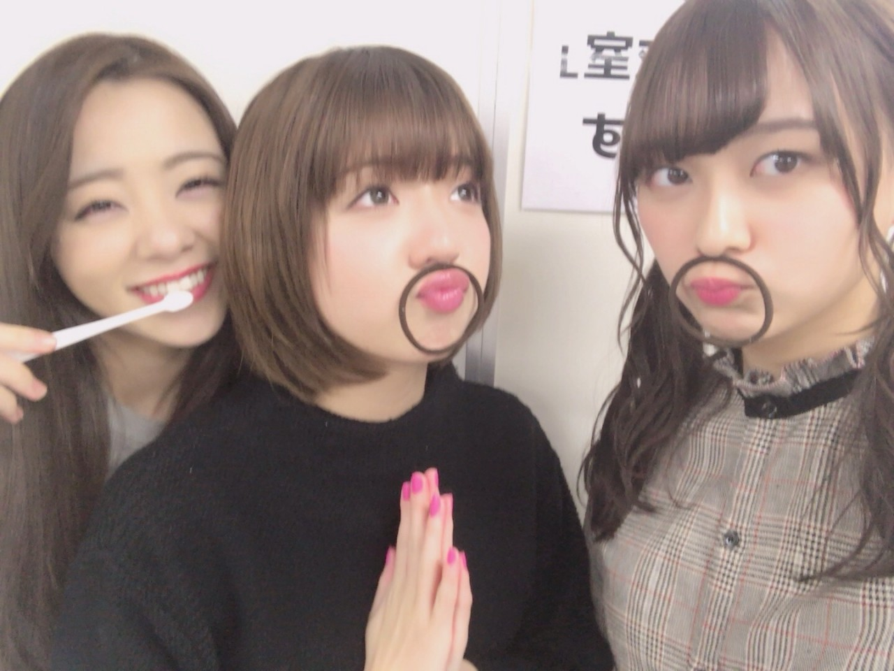
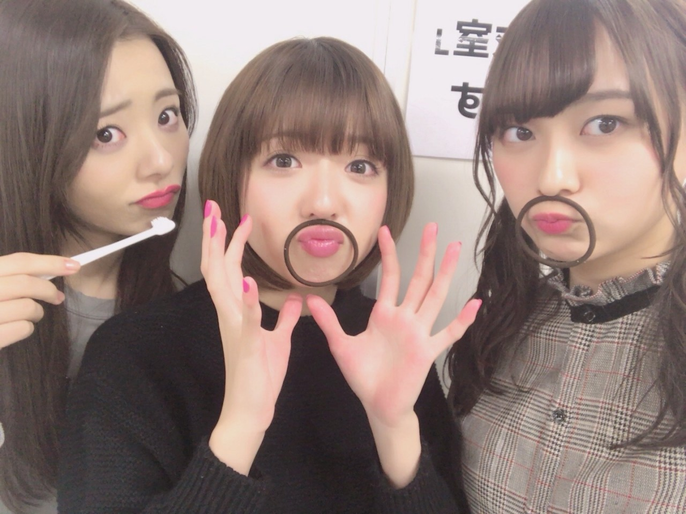
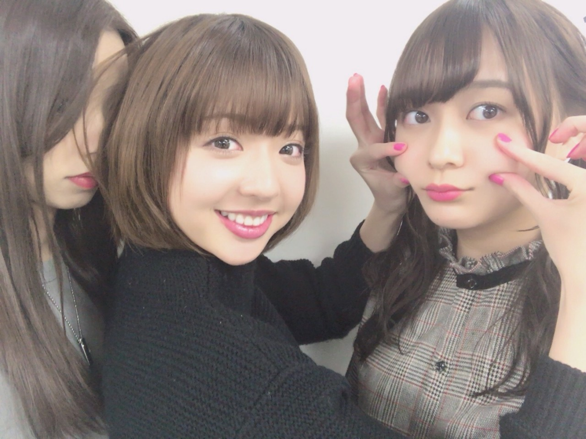

| 2018/01 16 Tue | 川村真洋 工事中。蟹会。仙台。 |
明日は仙台に行きます！

アンダーアルバム「僕だけの君～Under Super Best～」のPRを兼ねて、川村真洋・佐々木琴子・鈴木絢音で乃木坂46の事を沢山PRできる様頑張ります！
色々な番組に生出演しますので是非チェックよろしくお願いします♪
■東日本放送テレビ「突撃！ナマイキTV」日時：1月17日（水）9:55～11:05内
■東北放送ラジオ「ロジャー大葉のラジオな気分」
日時：１月17日(水)15:00～16:00内
日時：１月17日(水)15:00～16:00内
■Date fm「SOUND GENIC」
日時：1月17日（水）18:00～18:30内
日時：1月17日（水）18:00～18:30内
まあやとあやねの輪ゴムお髭よ。
可愛いでしょ♡

あら可愛い。

いい匂い。笑

あっ。『乃木坂工事中～軍団対抗バトル～』チューリップ優勝♡
私，ずー，あみ，ちー，まあや，えりか，ヒム子，川後。
そして先週はチューリップのご飯会が放送されました！
本当にただただ楽しんでいる映像。笑
このメンバー集まっちゃったら皆カメラの事忘れちゃいます(*´ω`*)
見てくださった方々から
「見てるだけで楽しい～，ずっと見てられる～」と言って貰えて本当に嬉しいです。
又チューリップで 特に何も起こらないけどひたすら楽しいロケ。をできるといいですよね‼︎
そしてそして‼︎‼︎
今回のヤングギターのweb動画の方は，アンダーライブ近畿&四国ツアーの裏側の様子を撮影して頂きました‼︎
色んなメンバーの楽屋の様子や、ライブ直前の様子なども撮影されていますので是非見て頂けると嬉しいです♡
愛されまあやちゃん流石面白いです.
雑誌の方もチェックよろしくお願いします！